Azure ポータルで パブリックロードバランサーを作成する
適用対象: ✔️ ロードバランサー
この演習では、Azure ポータルを使用して パブリックロードバランサーを作成します。
所要時間: 約 30 分
先行の演習
この演習を始める前に 仮想マシンを作成する（Windows 可用性セット） を完了してください。
ロードバランサー
ロードバランサーは 通信を振り分けてサーバーの負荷（ロード）を分散するための装置です。
Azure では リソース として実装されています。
| 分類 | 説明 |
|---|---|
| パブリック ロードバランサー | パブリック IP アドレスからの 通信を振り分けてサーバーの負荷を分散 |
| 内部 ロードバランサー | プライベート IP アドレスからの 通信を振り分けてサーバーの負荷を分散 |
5タプル と 5タプルハッシュ
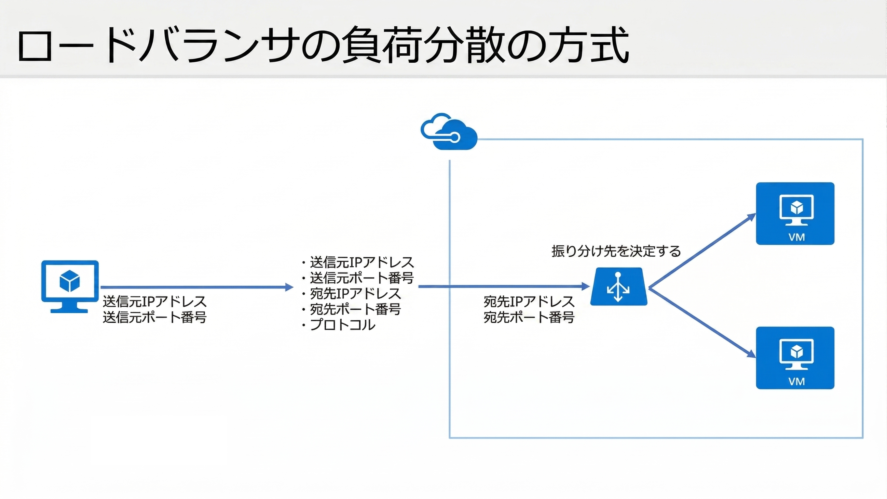
| 5タプル 要素 | 説明 |
|---|---|
| 送信元IPアドレス | クライアントの IP アドレス |
| 送信元ポート番号 | クライアント側で接続ごとに使われるポート番号 |
| 宛先IPアドレス | ロードバランサーの IP アドレス |
| 宛先ポート番号 | ロードバランサーの 待ち受けポート番号 |
| プロトコル | トラフィックのプロトコルの種類 (TCP / UDP) |
Azureの ロードバランサーは、デフォルトで「5タプルハッシュ」で 通信を振り分けます。
「5タプル」は、通信を 他の通信と区別することができる 5つの要素の組み合わせです。
「5タプルハッシュ」は、「5タプルのハッシュ値の 剰余で振り分け先を選択」する方式です。
5タプルハッシュ 解説＆シミュレーター で理解を深めてください。
ロードバランサーの設定

| 設定 | 説明 |
|---|---|
| フロントエンド | クライアントからの通信を受け取るエンドポイント |
| 負荷分散規則 | 通信をバックエンド プールのサーバーに振り分けるための規則（ルール） |
| バックエンド プール | 負荷分散の対象となるサーバーのプール（集まり） |
| 正常性プローブ | バックエンドの正常性を確認するためのプローブ（探査） |
タスク 1: ロードバランサー の作成
ロードバランサー を作成します。
- 上部の検索ボックスに
ロードバランサーと入力します。 - [ロードバランサー] を選択します。
- [＋ 作成] を選択します。
- [Standard Load Balancer] を選択します。
- 使用する サブスクリプション を選択します。
- リソース グループで
msaz-rgを選択します。 - 名前に
msaz-lbと入力します。 - 利用可能な リージョン を選択します。
- SKUで [Standard (バックエンド リソースへのトラフィックの分散)] を選択します。
- 種類で [パブリック] を選択します。
- レベルで [地域] を選択します。
- [次: フロントエンド IP 構成] を選択します。
- [＋ フロントエンド IP 構成の追加] を選択します。
パブリック IP アドレス は 新規作成します。 - [保存] を選択します。
- [確認および作成] を選択します。
フロントエンド以外は ロードバランサーの作成後に設定します。 - 内容を一通り確認し、[作成] を選択します。
- 完了を待ちます。
| 設定 | 値 |
|---|---|
| 名前 | frontend |
| パブリック IP アドレス | (新規) msaz-lb-ip |
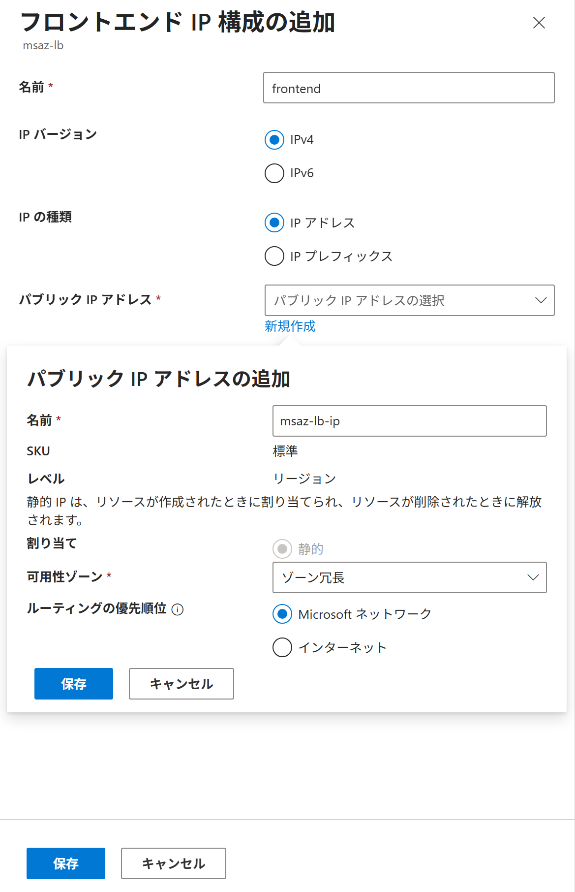
タスク 2: 作成されたリソースの確認
ロードバランサーが作成されていることを確認します。
- 上部の検索ボックスに
ロードバランサーと入力します。 - [ロードバランサー] を選択します。
msaz-lbが存在することを確認します。msaz-lbを選択します。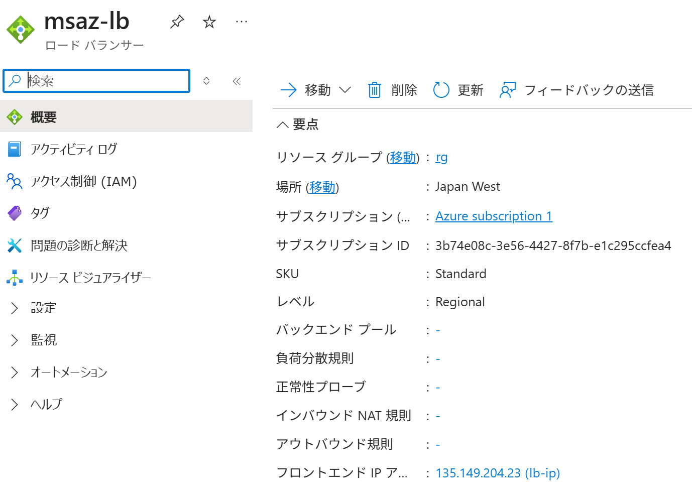
- バックエンド プール、負荷分散規則、正常性プローブ、インバウンド NAT 規則 が まだ作成されていないことを確認します。
- サービスメニューから 設定 ＞ [フロントエンド IP 構成] を選択します。
frontendが存在することを確認します。
タスク 3: ロードバランサーのバックエンド プールの作成
ロードバランサーのバックエンド プール を作成します。
バックエンド プールは、負荷分散の対象であるサーバーの集まりです。
- 仮想マシン 2台 を開始します。
- 上部の検索ボックスに
ロードバランサーと入力します。 - [ロードバランサー] を選択します。
msaz-lbを選択します。- サービスメニューから 設定 ＞ [バックエンド プール] を選択します。
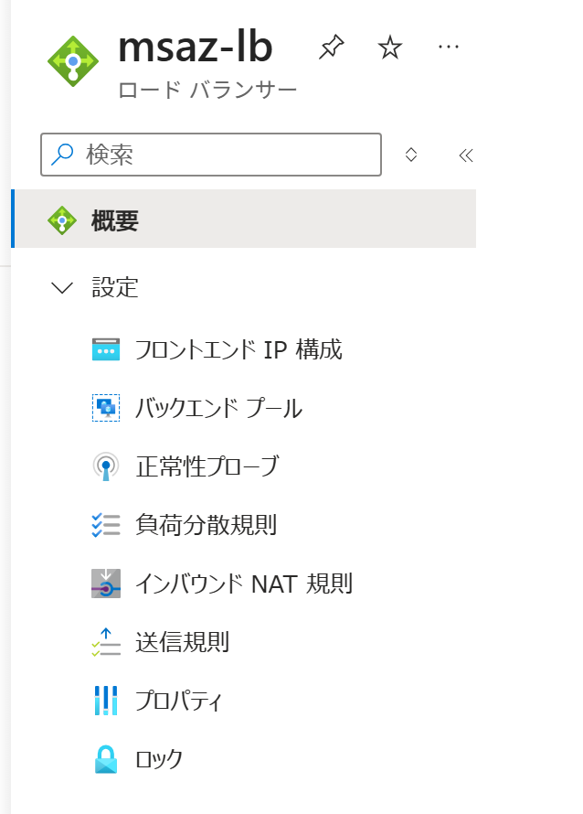
- [＋ 追加] を選択します。
- [＋ 追加] を選択します。
- 仮想マシン 2台 のチェックボックスにチェックを入れます。
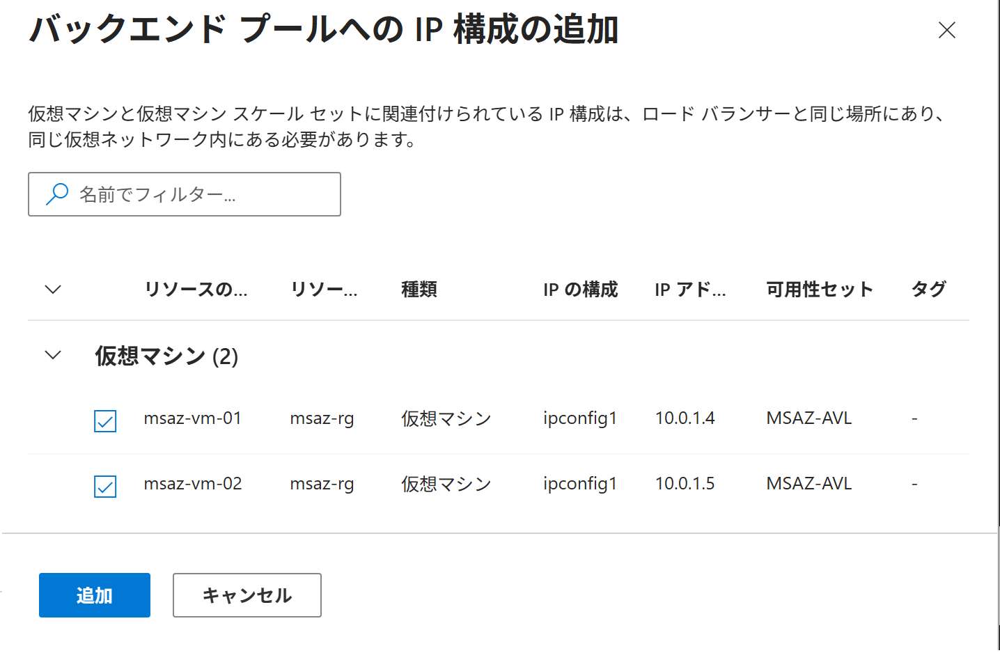
- [追加] を選択します。
- [保存] を選択します。
- 完了を待ちます。
| 設定 | 値 |
|---|---|
| 名前 | backend |
| 仮想ネットワーク | msaz-vnet (msaz-rg) |
| バックエンド プールの構成 | [NIC] |
タスク 4: 作成されたリソースの確認
ロードバランサーのバックエンド プールが作成されていることを確認します。
- 上部の検索ボックスに
ロードバランサーと入力します。 - [ロードバランサー] を選択します。
msaz-lbを選択します。- サービスメニューから 設定 ＞ [バックエンド プール] を選択します。
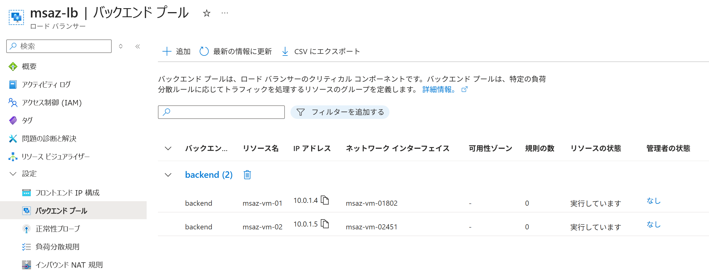
- 仮想マシン 2台 が
backendに関連付けされていることを確認します。
タスク 5: ロードバランサーの正常性プローブの作成
ロードバランサーの正常性プローブを作成します。
正常性プローブは、バックエンドのサーバーの正常性を確認するためのプローブ（探査）です。
ここでは TCP 80 番ポートの正常性プローブを作成します。
| プロトコル | 宛先ポート番号 | 探査（プローブ）内容 |
|---|---|---|
| TCP | 80 | TCP 80 番ポートに対して TCP 接続を開始し、3 ウェイ ハンドシェイクが成立するかどうか |
| HTTP | 80 | HTTP 80 番ポートに対して GET リクエストを送信し、200 OK レスポンスを受信するかどうか |
- 上部の検索ボックスに
ロードバランサーと入力します。 - [ロードバランサー] を選択します。
msaz-lbを選択します。- サービスメニューから 設定 ＞ [正常性プローブ] を選択します。
- [＋ 追加] を選択します。
- [保存] を選択します。
- 完了を待ちます。
| 設定 | 値 |
|---|---|
| 名前 | probe |
| プロトコル | [TCP] |
| ポート番号 | 80 |
| 間隔 | 5 |
タスク 6: 作成されたリソースの確認
ロードバランサーの正常性プローブが作成されていることを確認します。
- 上部の検索ボックスに
ロードバランサーと入力します。 - [ロードバランサー] を選択します。
msaz-lbを選択します。- サービスメニューから 設定 ＞ [正常性プローブ] を選択します。
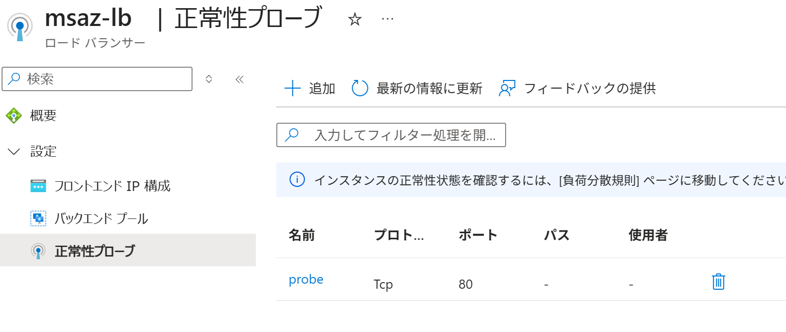
probeが作成されていることを確認します。
タスク 7: ロードバランサーの負荷分散規則の作成
ロードバランサーの負荷分散規則 を作成します。
負荷分散規則は 通信をサーバーに振り分けるための規則（ルール）です。
ロードバランサー フロントエンド IP アドレスの 80 番ポートに届いた通信を、
バックエンドにある サーバーの 80 番ポートへ振り分けるルールを作成します。
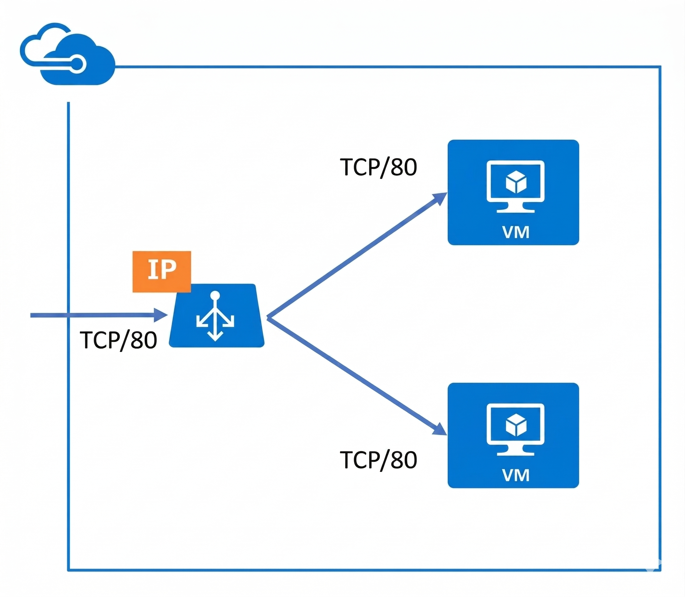
- 上部の検索ボックスに
ロードバランサーと入力します。 - [ロードバランサー] を選択します。
msaz-lbを選択します。- サービスメニューから 設定 ＞ [負荷分散規則] を選択します。
- [＋ 追加] を選択します。
- [保存] を選択します。
- 完了を待ちます。
| 設定 | 値 |
|---|---|
| 名前 | lb-rule |
| フロントエンド IP アドレス | frontend (xxx.xxx.xxx.xxx) |
| バックエンド プール | backend |
| プロトコル | [TCP] |
| ポート | 80 |
| バックエンド ポート | 80 |
| 正常性プローブ | probe (TCP:80) |
| セッション永続化 ※ | [なし] |
セッション永続化
セッション永続化は 特定のクライアントの接続を 特定のサーバーに固定する機能 です。
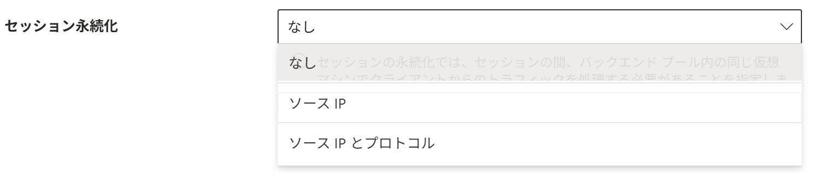
| ポータルの表示 | 振り分けの判断材料 (タプル) |
どんな動きになる？ | どんな時に使う？ |
|---|---|---|---|
| なし | 5つの情報 (IP、ポート、通信の種類) |
とにかくバラバラに振り分ける 同じ人からのアクセスでも、例えば別のブラウザからの接続は 別のサーバーに振り分けられる場合がある。 |
デフォルト。 特定のサーバーに負荷が集中せず、システム全体を効率よく使える。 |
| ソース IP | 2つの情報 (自分と相手のIP) |
「同じ人」は「同じサーバー」へ 同じIPアドレスからの通信なら、常に同じサーバーに振り分けられるようになる。 |
ログイン状態を保ちたい時。 サーバー側で「誰が今操作中か」を一時的に覚えているアプリに。 |
| ソース IP と プロトコル |
3つの情報 (IP、通信の種類) |
「同じ人」かつ「同じ通信の種類」なら「同じサーバー」へ IPが同じでも、通信の種類（TCPかUDPか）が変われば振り分け先も変わる場合がある。 |
特殊なケース。 同じ人からの接続でも、通信の種類によって処理するサーバーを分けたい場合。 |
タスク 8: 作成されたリソースの確認
ロードバランサーの設定が作成されていることを確認します。
- 上部の検索ボックスに
ロードバランサーと入力します。 - [ロードバランサー] を選択します。
msaz-lbを選択します。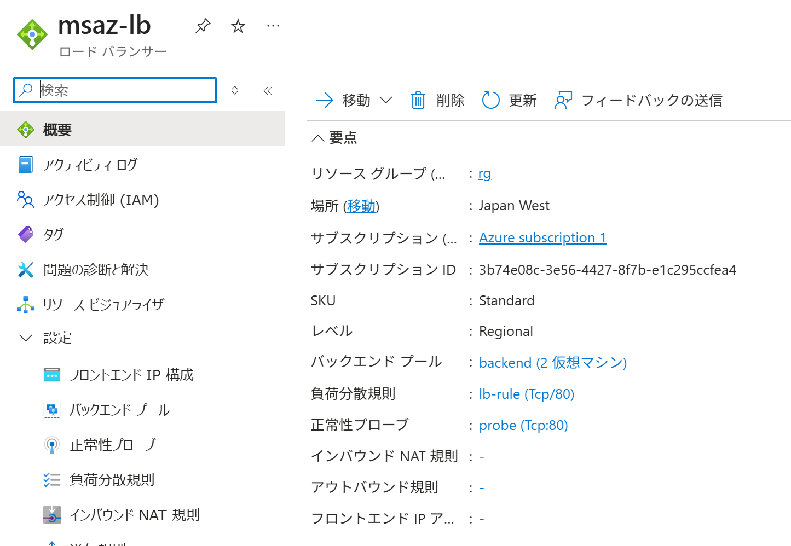
- バックエンド プール、負荷分散規則、正常性プローブ が 作成されていることを確認します。
通信の振り分け方式
| 宛先アドレス | 宛先ポート | 適用される規則 | 振り分け方式 | 転送先アドレス | 転送先ポート | サービス |
|---|---|---|---|---|---|---|
| フロントエンド ロードバランサー |
80 | 負荷分散規則 | 5タプルハッシュ （セッション永続化：なし） |
バックエンド 仮想マシン |
80 | HTTP |
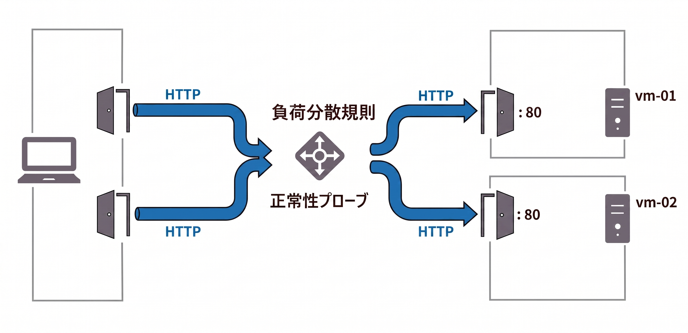